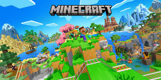

(Esta lista está basada en mi experiencia de juego).
| Logo | Juego | Jugabilidad | Graficos | Historia (si tiene) | Problemas a destacar |
|---|---|---|---|---|---|
| Project Zomboid | 9: Aunque aún le faltan problemas poco frecuentes por solucionar es muy disfrutable ofreciendo una muy buena sensación de supervivencia | 9: Practicamente todo son imagenes con efectos simples pero efectivos mezclado con un estilo artisitico bueno y representativo | 7: Le falta un objetivo a el juego, pero lo que tiene de histori está bien | Hay problemas principalmente en el combate y en la conexión en el multijugador. Además se siente sin objetivos. | |
 |
Battlefield-1 | 9,7: Tanto el modo campaña como el multijugador son muy disfrutables | 9,8: Destacan en calidad teniendo en cuenta que fué lanzado en 2016 | 9,5: Muy buena campaña | Abeces hay cheaters |
| Darquest Dungeon | 9,5: En este juego además de habilidad tienes que disponer de la suerte, pero está muy bien implementado | 9,3: Utiliza un arte brutal pero quizás le faltan efectos | 9: No deja nada que desear | En ocasiones dependes demasiado de la suerte, pero se puede pasar sin mucho problema | |
| Surviving Mars | 9,8: Aunque le falta una finalidad (aparte de sobrevivir) es muy disfrutable | 8: Bastante buenos, más que sufucientes para el juego | 9: Es más un objetivo que una historia, pero se siente presente | Cuando se llega a el "final" no hay objetivos y te quedas sin cosas que hacer | |
|  | Minecraft | 9,8: Excelente | 9: Muy buenos | 6,7: Demasiado entevesada y escasa de información | No se siente del todo un juego de supervivencia sino que uno de aventura |
| Comida |
|---|
| Bocadillo PPML (Pepinillo Pechuga Mayonesa Limón) |
| Macarrones (De cualquier tipo pero bien hechos) |
| Paella |
Cita:
¿Ustedes piensan antes de hablar o hablan tras pensar?